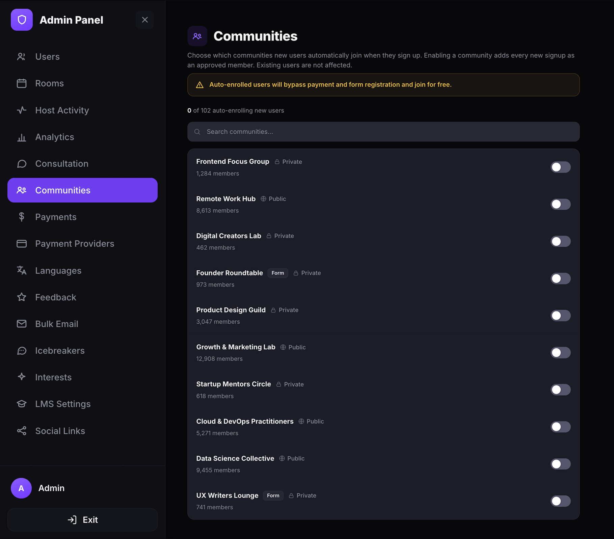
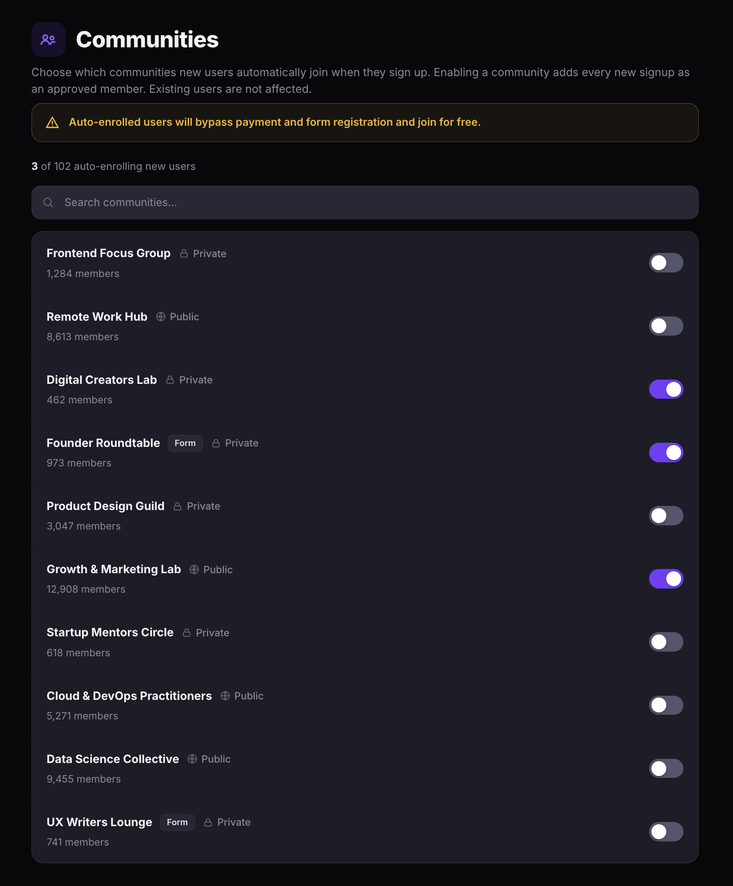

Manage communities
Choose which communities new users automatically join when they sign up. Use auto-enrollment to onboard new signups into specific communities without manual approval.
Open the Communities page
- Open the Admin Panel.
- Click Communities in the left sidebar.
The Communities page lists every community on the platform. Each entry shows the community name, pricing type (Paid or Free), visibility (Public or Private), member count, and an auto-enroll toggle.

Enable auto-enrollment
When auto-enrollment is enabled for a community, every new user who signs up on the platform is automatically added as an approved member. Existing users are not affected.
- Find the community you want to auto-enroll users into. Use the Search communities bar to filter by name.
- Toggle the switch to the on position (purple) to enable auto-enrollment.
The counter above the search bar updates to show how many communities have auto-enrollment enabled.

Disable auto-enrollment
- Find the community with auto-enrollment enabled.
- Toggle the switch to the off position (grey) to disable auto-enrollment.
New signups will no longer be added to the community automatically. Users who were already auto-enrolled remain as members.